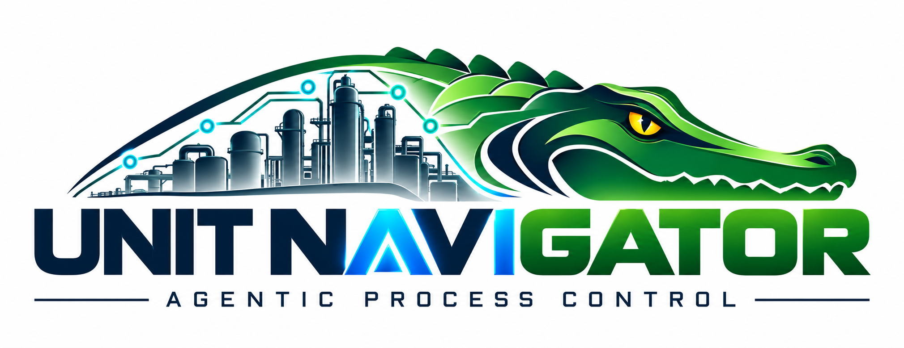

The next generation of process control
Capture operating knowledge, uncover insights in live and historical data, and give your team a shared workspace for process screens, dashboards, and monitoring.
Connecting to your data
Bring live measurements, historical records, and calculated signals into one workspace from the systems you already use. Each connection starts with a read interface your source exposes, such as an OPC UA endpoint, a REST API, a SQL view, or a file export.
Unit Navigator reads the data you select. Write access to your systems stays disabled for data connections.
Common industrial data sources
-
Process simulators *Aspen HYSYS simulation tags and results
-
SCADA & controlsIgnition tags via OPC UA, including PLC or DCS signals exposed by a gateway
-
 Plant historiansAVEVA PI time series and events via PI Web API
Plant historiansAVEVA PI time series and events via PI Web API -
Analytics platformsSeeq signals and calculations via its API
-
SQL databasesTimestamped measurements and production records from a SQL Server or PostgreSQL table or view
-
APIs & exportsInternal REST endpoints and timestamped CSV files
Aspen HYSYS is the only data connection tested so far.
Viewing FastMAN© Analytics
Find patterns in your process data. FastMAN uses dimensionality reduction and clustering to reveal distinct operating regimes and show which variables help distinguish them.
Creating sharable screens and dashboards
Connect operator screens and dashboards to your live process data. See readings alongside equipment on the process diagram, and track critical variables and monitoring results in your dashboards.